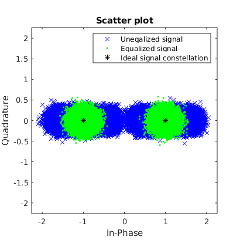
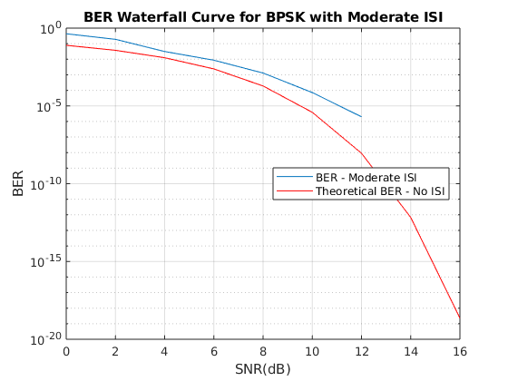

Contents
ECE408 Wireless Communications
Armaan Kohli Spring 2020 Project 1
clear all; close all; clc;
Part 2: Equalizing a Channel with Moderate ISI for BPSK
numIter = 5; nSym = 100000; % Needed to increase number of symbols to verify that BER SNR_Vec = 0:2:16; % meet the 10e-4 at 12dB SNR specification lenSNR = length(SNR_Vec); M = 2; % The M-ary number, 2 corresponds to binary modulation K = log2(M); % Number of bits per symbol trainlength = nSym/10; chan = [1 .2 .4]; % Somewhat invertible channel impulse response, Moderate ISI % Modulator bpskMod = comm.BPSKModulator('PhaseOffset',0); % Demodulator bpskDemod = comm.BPSKDemodulator('PhaseOffset',0); % Equalizer Object eq1 = dfe(2,3,signlms(0.01)); eq1.SigConst = bpskMod((0:M-1)')'; % Set signal constellation. eq1.ResetBeforeFiltering=0; berVec = zeros(numIter, lenSNR); for i = 1:numIter bits = randi(2,[nSym*K, 1])-1; data = reshape(bits,length(bits)/K,K); % Reshape bits into binary k-tuples, K = log2(M) msg = bi2de(data); for j = 1:lenSNR tx = bpskMod(msg); if isequal(chan,1) txChan = tx; elseif isa(chan,'channel.rayleigh') reset(chan) % Draw a different channel each iteration txChan = filter(chan,tx); else txChan = filter(chan,1,tx); % Apply the channel. end % Convert from EbNo to SNR. % Note: Because No = 2*noiseVariance^2, we must add ~3 dB % to get SNR (because 10*log10(2) ~= 3). txNoisy = awgn(txChan,(10*log10(K)+SNR_Vec(j)),'measured'); % Add AWGN EqData1 = equalize(eq1,txNoisy,tx(1:trainlength)); rx = bpskDemod(EqData1); rxMSG = de2bi(rx,K); rxMSG = rxMSG(:); [~, berVec(i,j)] = biterr(bits(2:end), rxMSG(2:end)); end end h = scatterplot(txNoisy,1,trainlength,'bx'); hold on; scatterplot(EqData1,1,trainlength,'g.',h); scatterplot(eq1.SigConst,1,0,'k*',h); legend('Uneqalized signal','Equalized signal',... 'Ideal signal constellation'); hold off; ber = mean(berVec,1); figure(2) semilogy(SNR_Vec, ber) hold on; berTheory = berawgn(SNR_Vec,'psk',M,'nondiff'); semilogy(SNR_Vec,berTheory,'r') grid on; legend('BER - Moderate ISI','Theoretical BER - No ISI', 'Location','best') xlabel('SNR(dB)'); ylabel('BER'); title("BER Waterfall Curve for BPSK with Moderate ISI") 